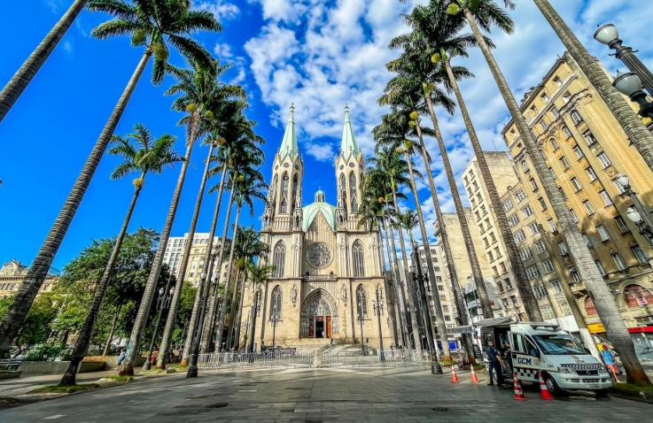
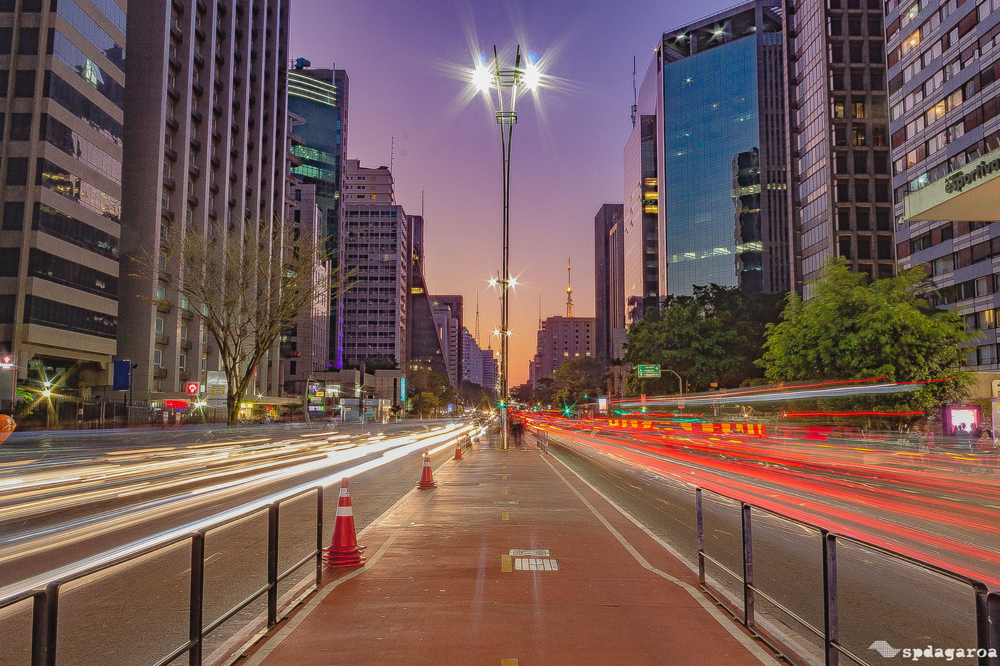
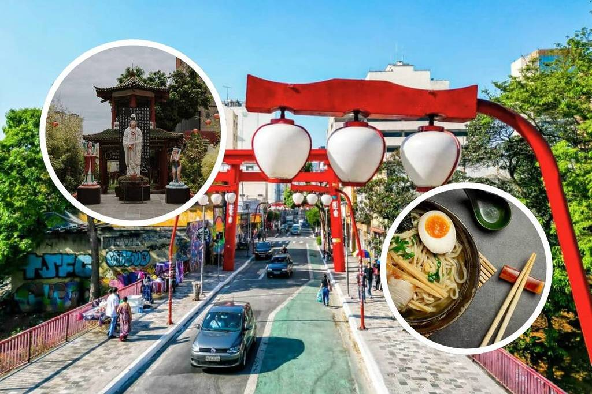

Mais viagens
Descubra qual será seu próximo passeio

Praça da Sé
Boa localizaçãoConheça o local histórico que reúne memórias e momentos importantes da maior capital da América Latina.

Avenida Paulista
Livre aos domingosVisite a avenida mais conhecida dos brasileiros, passeie e conheça o MASP.

Liberdade
Mais movimentadoO bairro mais cultural e diversificado de São Paulo. Conheça uma nova culinária.